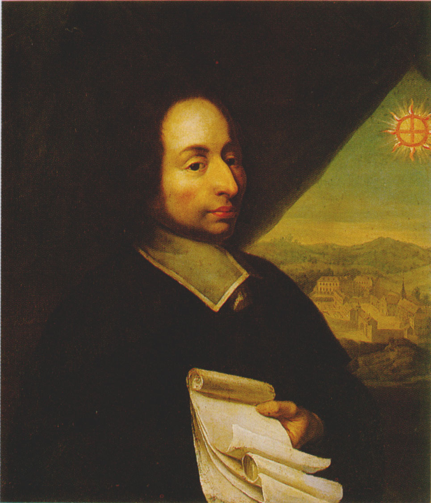

Pascal's Triangle is more than just a pretty picture. It's a powerful tool with applications in everything from algebra to probability theory. This website is your guide to unlocking its secrets. Learn about its history, experiment with interactive models, and discover the many ways this triangle shapes our world.
Welcome to the Pascal's Triangle website!
Explore the fascinating history of Pascal's Triangle

From its ancient origins in China, Persia, and India to its formalization by Blaise Pascal in the 17th century, this triangle has been a key mathematical discovery for centuries. Learn about the mathematicians who contributed to its development and how it has influenced modern science, from algebra to probability theory.